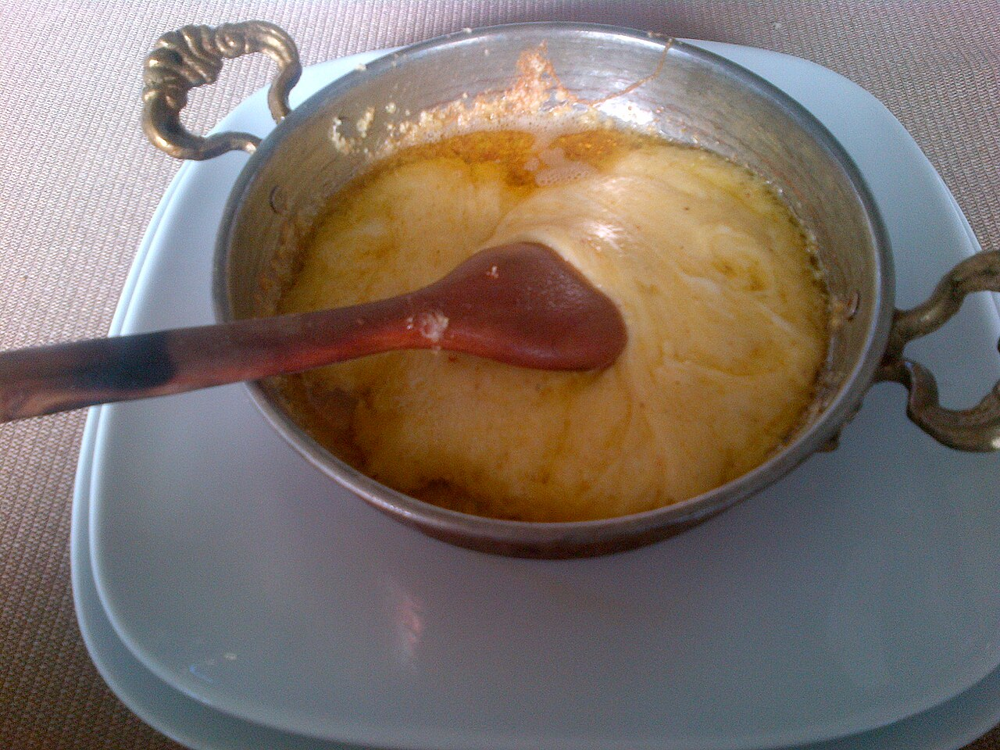
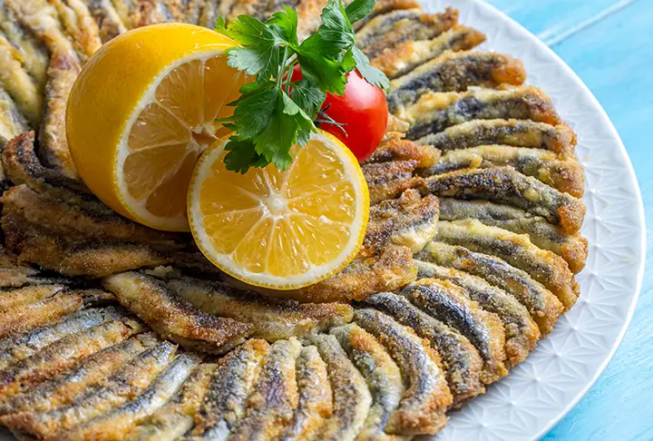
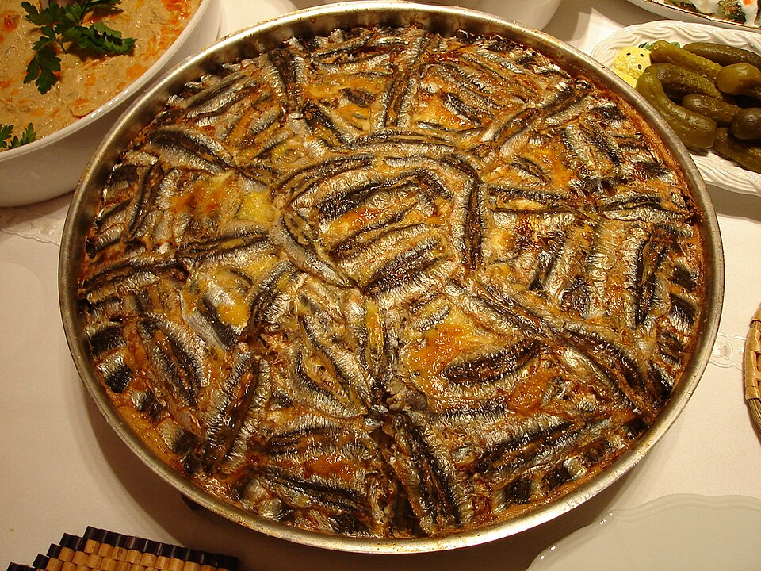
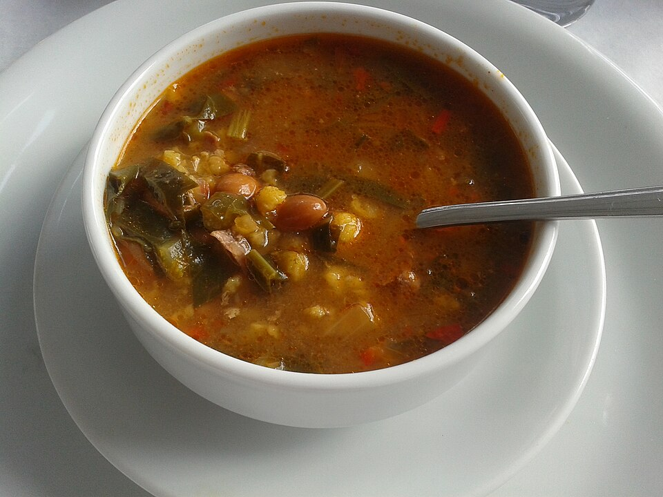
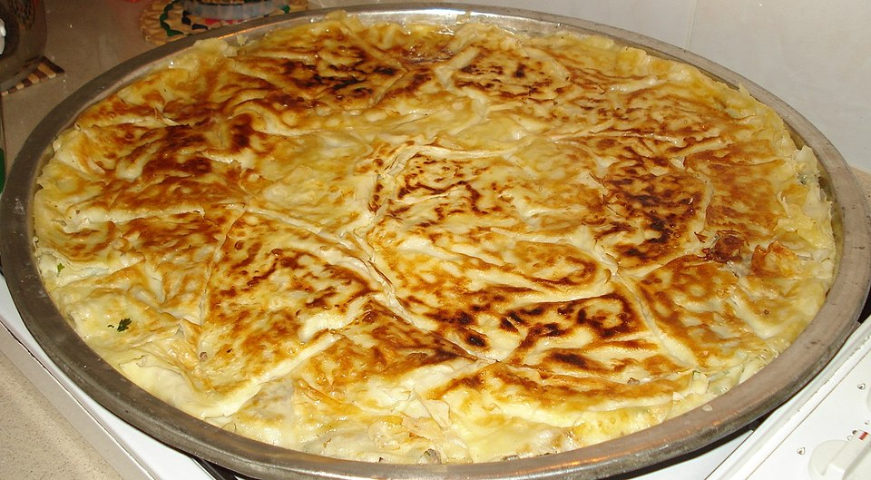
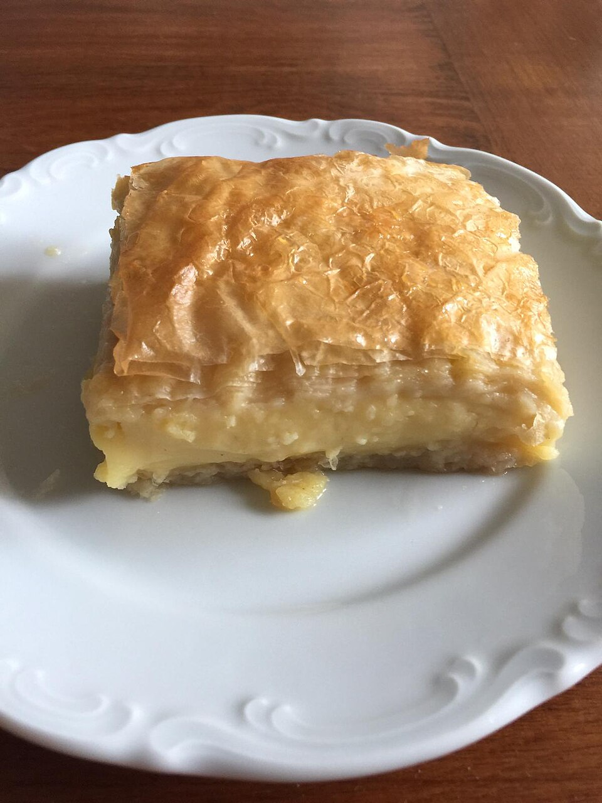
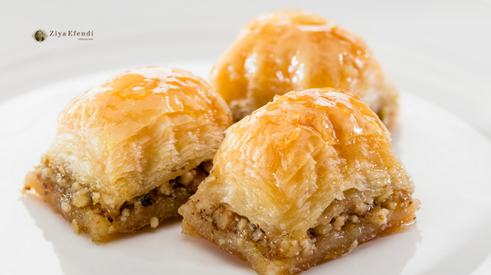
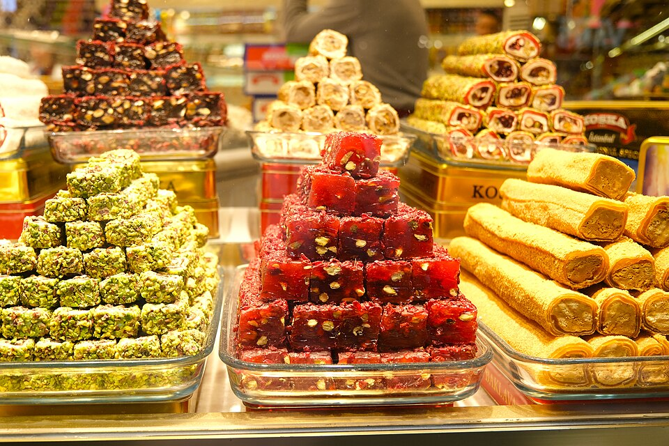
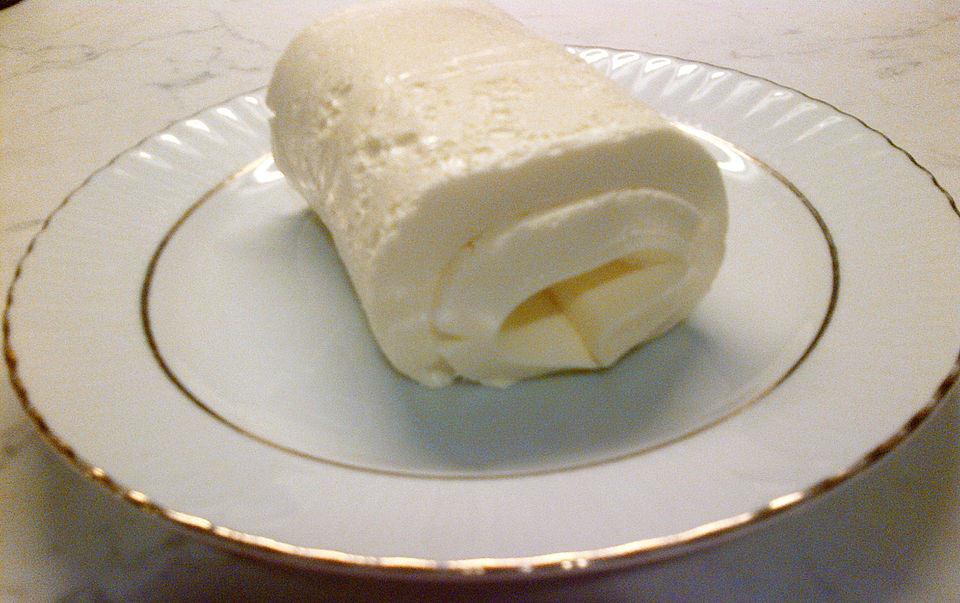

İşlem başarılı!
Resme tıklayarak tam tarife ulaşın. Malzemeler ve adım adım yapılış bilgisi tam ekranda açılır.
Arama sonucu bulunamadı.

Mısır unu, kaşar peyniri ve tereyağının buluştuğu Karadeniz'in en ikonik kahvaltılığı.
Tereyağında kavrulan mısır ununun peynirle buluşmasından doğan, sıcacık kış yemeği.

Karadeniz'in simgesi hamsi, mısır unuyla kaplanıp kızartıldığında lezzet şöleni sunar.

İçine ve dışına hamsi dizilmiş, fındık ve kuş üzümüyle hazırlanan Karadeniz'in özgün pilav tarifi.

Kış sofralarının ısıtıcısı: karalahana, mısır unu ve baharatlı tereyağı sosuyla hazırlanan şifalı çorba.
Karadeniz'in mısır unu geleneğini yansıtan sade ve besleyici çorba. Üzerine biber ve kekik sizzle ile servis edilir.

Peynir, yumurta ve ıspanak harcıyla hazırlanan, yöreye özgü yumuşak iç ve çıtır dışlı börek.

Çıtır yufkalar arasına muhallebi doldurulan Karadeniz'in tatlı şaheseri. Hem görsel hem de lezzet olarak eşsiz.

Ceviz yerine Giresun fındığının kullanıldığı bu baklava, şerbeti ve özel tadıyla cevizli baklavadan farklı bir deneyim sunar.

Taze Giresun fındığı ve gül suyuyla hazırlanan bu lokum, Türkiye genelinde tanınan coğrafi işaretli bir tatlıdır.
Coğrafi işaretli Giresun fındığından yapılan doğal ezme. Hem kahvaltılık hem pişirme malzemesi olarak kullanılır.

Yayladan gelen tam yağlı sütten elde edilen, bal ve fındık ezmesiyle servis edilen özgün Karadeniz kaymağı.